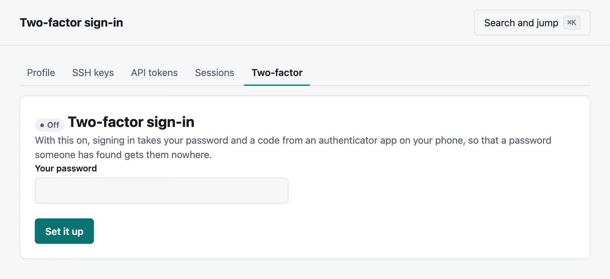
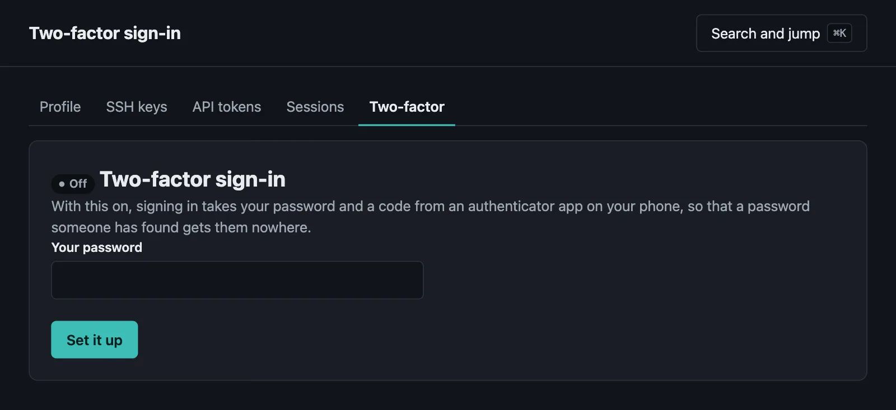

How people sign in
Single sign-on with your identity provider, two-factor sign-in, and signing in through a proxy.
On this page
Everyone starts with an email address and a password. Two-factor sign-in adds a code to that, and a server can leave signing in to your own identity provider, or to a proxy in front of it.
Single sign-on#
Settings → Sign-in connects the server to any provider that speaks OpenID Connect. Tell the provider the address that page shows, which it sends people back to, and give the page:
- Its address. The server finds the rest there, and will not save until it has. It has to be https.
- A client ID and secret, from your provider. The secret is sealed with the master key.
- What the button says.
The sign-in page then offers that button beside the password form. Try it in a private window before you sign out.
Who gets in#
Someone with an account already joins up by their email address the first time, as long as the provider says that the address is verified. From then on they are who the provider says, whatever their address becomes. If your provider leaves that out, as some do, and nobody can choose their own address there, tick Take your provider's word. Otherwise, they are told to ask you. A provider that says an address is unverified is never believed.
Someone with no account gets one the first time if you tick Make an account, as a member who can look at the default project and do nothing else, until a group or you say otherwise. Everyone else is a maintainer of that project unless you have changed it, under Projects. Say which addresses this is for with Addresses at, or anyone your provider signs in gets an account.
What they may do#
Their groups can say. Ask your provider for them, usually with a scope and a claim that are both called groups, and say what they mean, one to a line:
ops = admin
web-team = project web maintainer
web-readers = project web viewerThese are applied each time someone signs in: they get the highest role that their groups give in each project, and lose what they no longer have. What the rules do not mention stays as you set it, so that without a rule for admin, it stays yours to give by hand. A rule says that its group decides that project: someone not in the group has no more than a look at it, even in one that gives everyone more. If your provider says nothing of someone's groups, in its token or when asked for their user info, that counts as none, as some leave them out for someone in no groups, and the server's log says so: if they do have some, it may need a scope, or the claim's name. Whoever is the last administrator stays one.
Only through your provider#
Only sign in through the provider turns off passwords, in the console and the API, and links to choose one. API tokens and SSH keys go on working, and so does moor login, which goes through your browser. Two-factor sign-in is then up to your provider.
If your provider goes away, on the server's own machine:
moor server sso offThat turns single sign-on off and gives passwords back. Someone who only ever signed in through the provider has no password, and moor server users invite EMAIL prints a link to choose one.
Two-factor sign-in#
See accounts. It applies to signing in with a password, and is up to your provider for someone who signs in through one.


Behind a proxy that signs people in#
If something in front of Moorage already signs people in, such as an authenticating proxy, it can say who they are in a header:
[auth]
trusted_header = "X-Auth-Request-Email"
trusted_name_header = "X-Auth-Request-User" # optional
trusted_provision = true # make accounts for new people
[proxy]
trusted = ["10.0.0.5"]The header counts only from the addresses under [proxy] trusted, and your proxy has to replace any copy of it that a client sends. Otherwise anyone could say that they are anyone. The server refuses to start with a trusted_header and no trusted proxy, and it is best if nothing else can reach it at all (Behind a TLS proxy says how).
Claim the server first, with its setup link, which works through the proxy: until there is an administrator, the header is ignored, so that the first person to come by does not make the server theirs. Someone who gets an account from trusted_provision can look at the default project and do nothing else until you say.
Run that proxy on another machine. Apps deployed on this server can reach it from any of this machine's addresses, so if a trusted range holds one of those, an app could say that it is anyone. The server warns about this when it starts. If you can only run them together, use this for a server whose apps you trust as you trust your administrators.
Signing out of Moorage signs them in again at once, as the proxy still says who they are: signing out is up to the proxy. The API goes on asking for a token.
See also#
- Accounts and access
- Who can reach an app: the same sign-in can guard your apps